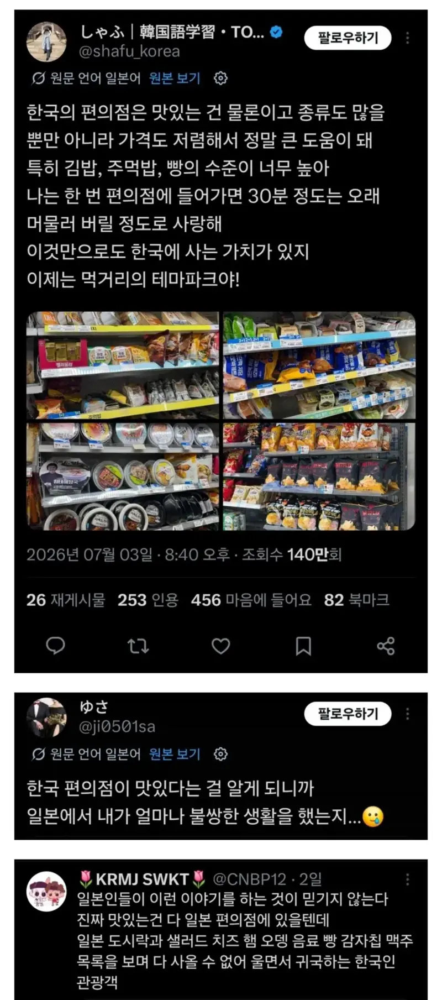

일본인 : 한국 편의점이 맛있어서 일본에 사는 내가 불쌍해
댓글
다음에는 일본 시장 들러서 떡집에서 파는 당고 먹어봐라.
그 뒤로부터 편의점 당고는 고무씹는것 같더라.
진짜 잘하는 집 가보면 눈 돌아간다 바로 구워주는거도 존맛이고
당고자체가 별로던데
1인가구 등에업고 존나 성장한듯 예전엔 콜라보상품, pb상품 거의 안보였는데
계란 샌드위치 빼곤 한국이 훨나음
근데 그 계란 샌드위치도 진짜 계란이 아니라 전분으로 만든 합성 계란임 ㅋㅋㅋ 물론 나는 로손 빵이 한국 보다 훨씬 맛있다는 쪽
?? 이런 어불성설퍼트리지마라 이미테이션계란아니더
진짜계란에 전분을 넣은거지
검색하자마자 바로 뜨네 https://m.blog.naver.com/PostView.naver?blogId=hg2076&logNo=224152115290&proxyReferer=https:%2F%2Fwww.google.com%2F&trackingCode=external
ㅈㄹ하지 마 일본 편의점 만세
남의 떡이 커 보이는 법
나는 일본편의점이 부럽다기보다는 푸딩이 부러워.. 진짜 한국에 푸딩도 별로 없고 있어도 존나 비싸 시발
자지푸딩 맛있어
기만하는거냐?
지금 리버스상태임ㅋㅋ
서로 양쪽의 편의점을 부러워하는 중
옛날엔 일본이 나았으나 소득 뒤집히면서 한국이 나아졌을듯
서로 남의 떡이 더 커보인다고하네
난 일본 편의점 푸딩빼면 그정돈가 싶은데 동네 마트 도시락이나 초밥 회 고기가 진짜 너무너무 맛있던데 여행가서 마트에서 장봐서 먹은 장어 덮밥이랑 카츠동이 뒤지게 맛있던데
음경푸딩 맛있던데 나중에 먹어봐
나도 이거 동의 ㅇㅇ 편의점 우월한건 잘 모르겠는데 동네마트 식품이 존~~나 차이심함
마트 음식이 진짜 맛있더라 ㅋㅋㅋ 싸고 양도 많고
쓰읍..
분명 10년 전까지만 해도 반대되는 이야기였던 것 같았는데
김밥은 한국꺼가 맛있던데
컵라면은 한국이 두루두루 낫고
삼김은 일본게 입에 맞더라
일본편의점 갈때 마다 ㅈㄴ 설레고 좋은디.. 쟤들도 그런갑다
맨날 일본가면 편의점 ㅈㄴ터는데
빵이랑 편의점은 너네가 더 좋아 이 바보들아....
일본컵라면 먹을거없더라
ㄹㅇ 뭔맛인지 모르겠어
한국 편의점 음식퀄이 많이 올라옴
나는 일본편의점에서 파는 당고가 그렇게 맛나더라